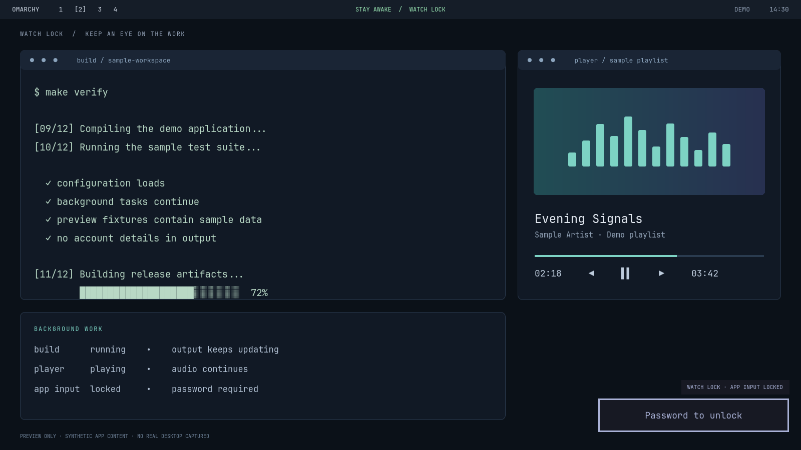
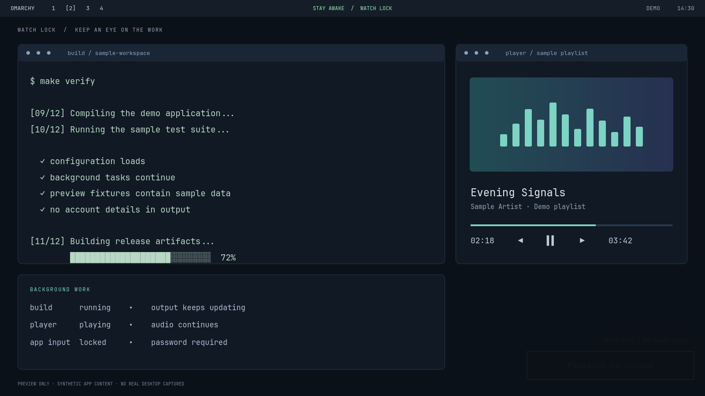

visitor@danimoya:~$ cat ./watch-lock/README
OMARCHY MOD // 0.1.0-DEV // PASSWORD-BASED PREVIEW
Watch the work.
Lock the input
Let a build finish. Keep your player in view. Watch Lock leaves your apps visible and updating while a Wayland session lock takes app keyboard, mouse and touch input.

One familiar mode switch.
Stay Awake on: manual locking keeps live apps visible, with a small password panel at the bottom right. Stay Awake off: normal locking, with support for a compatible animated-screensaver companion at the configured idle deadline.
Select the mode with the existing Stay Awake widget, then press Super+Ctrl+L. Use your existing system password or enrolled fingerprint to unlock. The standalone plugin adds no new credential or cloud account.
A panel that stays out of the way.
The password panel is 95% transparent when the pointer is outside it. Hover to restore full visibility. Keyboard entry still works when faded; app input remains with the lock.

Inspect before enabling.
This is a development preview of a lock-service mod, not an official Omarchy widget or a security-audited release. Enable one lock provider at a time, keep a working password and recovery session, and follow the repository setup and release checklist.
Watch mode deliberately leaves workspace content readable to people nearby. Use ordinary locking when that content needs privacy. Existing hardware/media shortcuts retain normal compositor behavior.
The source targets Omarchy 4.5 and Hyprland 0.56. Automated logic/UI checks and safe preview renders are recorded separately from the remaining standalone authentication, recovery, suspend and multi-monitor release tests.